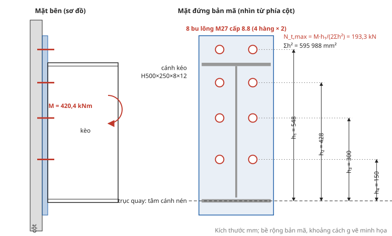

Bài 7.4. Bu lông mặt bích End-plate moment connections
Trong liên kết mặt bích kèo – cột, mô men làm các hàng bu lông phía cánh kéo chịu kéo. Lực trong hàng xa nhất tính theo giả thiết bản mã xoay quanh tâm cánh nén, sau đó kiểm tra kéo (188) và tương tác (190).
- Tính $\sum h_i^2$ và lực kéo $N_{t,\max}$ của hàng bu lông xa nhất.
- Kiểm tra bu lông theo (188), (190) và đánh giá chênh lệch giữa TCVN 5575:2024 và TCXDVN 338:2005.
1. Tình huống
Nút kèo – cột nhà xưởng Hòa Bình chịu $M = 420{,}4$ kNm, $V = 81{,}0$ kN (Ví dụ 7.1). Bảng tính COT-KEO cũ chọn 8 bu lông M27 cấp 8.8 và cho tỷ số kéo 1,05, tức là không đạt. Tính lại với $f_{tb} = 448$ MPa của TCVN 5575:2024 thì cùng bố trí đó cho tỷ số 0,94.
2. Quy định tiêu chuẩn
Mô men làm bu lông chịu kéo (liên kết mặt bích)
TCVN 5575:2024 không có công thức riêng cho liên kết mặt bích kèo – cột. Thực hành thiết kế ở Việt Nam (và bảng tính COT-KEO của khóa) giả thiết bản mã xoay quanh trục đi qua trọng tâm cánh chịu nén. Lực kéo trong hàng bu lông xa nhất:
Trong đó $h_i$ là khoảng cách từ hàng bu lông $i$ đến trục quay, $m$ là số bu lông trên một hàng (thường là 2) và $n$ là tổng số bu lông. Đây cũng là dạng của công thức (L.3) trong Phụ lục L.
Công thức ([-@eq:7-10]) bỏ qua lực bẩy (prying) do bản mã mỏng biến dạng. Để bỏ qua được lực bẩy, bản mã phải đủ dày, thông thường $t_p \ge d_b$ và không nhỏ hơn chiều dày cánh. Cách kiểm tra chiều dày bản mã theo đường chảy (yield-line) của AISC Design Guide 4/16 được trình bày ở Chương 15. Có thể dùng cách đó cho cả thiết kế theo TCVN.
3. Khám phá
Widget dùng số liệu Ví dụ 7.2 (4 hàng × 2 bu lông, $h_i$ = 548, 428, 300, 150 mm). Đổi đường kính, cấp bền, số hàng và vị trí hàng để xem lực từng hàng, kiểm tra (188), (190) và so sánh với số liệu TCXDVN 338:2005.

4. Ví dụ tính toán
Nội lực như Ví dụ 7.1. Mặt bích có đoạn kéo dài, 4 hàng × 2 bu lông 8.8 (cấp chính xác B). Khoảng cách tới trục quay (tâm cánh nén): $h_1 = 548$, $h_2 = 428$, $h_3 = 300$, $h_4 = 150$ mm.
Lời giải
| M24 | M27 | |
|---|---|---|
| $N_{bt} = 448 A_{bn}$ (kN) | 158,1 | 205,6 |
| $N_t/N_{bt}$ | 1,22 – không đạt | 0,94 |
| $N_{bv} = 332 A_b \times 0{,}9$ (kN) | 135,1 | 170,9 |
| $N_s = V/8$ (kN) | 10,1 | 10,1 |
| Công thức (190) | 1,50 | 0,89 – đạt |
| $N_{bp} = 620 \times d_b \times 20 \times 0{,}9$ (kN) | 267,8 | 301,3 |
| $N_{bt}$ theo TCXDVN 338 ($f_{tb} = 400$) | 141,2 | 183,6 → tỷ số 1,05 |
Bảng 7.8. Kiểm tra bu lông mặt bích kèo
Chọn 8 bu lông M27 cấp 8.8. Cùng lựa chọn này, nếu tính theo số liệu cũ của TCXDVN 338:2005 sẽ không đạt (1,05). Đây là một ví dụ cụ thể cho thấy cập nhật Bảng C.4 có ảnh hưởng thực đến thiết kế.
5. Lỗi thường gặp
- Dùng trục quay ở mép dưới bản mã hoặc ở trọng tâm nhóm bu lông, làm sai $h_i$ và lực kéo.
- Bỏ qua lực bẩy khi bản mã mỏng ($t_p < d_b$); khi đó lực bu lông thực tế lớn hơn giá trị theo ([-@eq:7-10]).
6. Luyện tập
Trong công thức ([-@eq:7-10]), $h_i$ được đo từ hàng bu lông $i$ đến đâu?
Gợi ý
Xem giả thiết về trục quay của bản mã.
Lời giải
Thực hành thiết kế giả thiết bản mã xoay quanh trục qua trọng tâm cánh chịu nén; $h_i$ đo từ trục này.
Mặt bích có 4 hàng × 2 bu lông, $h_i$ = 500, 400, 280, 140 mm, chịu $M = 250$ kNm. Bỏ qua $N$. Tính $N_{t,\max}$.
Gợi ý
Tính $\sum h_i^2$ trước.
Lời giải
$\sum h_i^2 = 500^2 + 400^2 + 280^2 + 140^2 = 508\,000$ mm²; $N_{t,\max} = 250\times10^6 \times 500/(2 \times 508\,000) = 123\,031$ N $= 123{,}0$ kN.
Bố trí như Ví dụ 7.2 ($\sum h_i^2 = 595\,988$ mm², $h_1 = 548$ mm, 8 bu lông M24 cấp 8.8, cấp chính xác B). Nội lực $M = 300$ kNm, $N = 40$ kN (nén, được kể đến), $V = 100$ kN. Tính vế trái của (190).
Gợi ý
$N_t = Mh_1/(m\sum h_i^2) - N/n$; $N_s = V/n$; $N_{bv} = 135{,}1$ kN, $N_{bt} = 158{,}1$ kN.
Lời giải
$N_t = 137{,}9 - 40/8 = 132{,}9$ kN; $N_s = 12{,}5$ kN; $(12{,}5/135{,}1)^2 + (132{,}9/158{,}1)^2 = 0{,}009 + 0{,}707 = 0{,}715 \le 1$ → đạt.
- $N_{t,\max} = Mh_1/(m\sum h_i^2) - N/n$, trục quay qua tâm cánh nén; bỏ qua $N$ nén là thiên về an toàn.
- Ví dụ 7.2: M24 không đạt (1,22); M27 cấp 8.8 đạt với (190) = 0,89. Theo TCXDVN 338 cùng bố trí cho tỷ số 1,05.
- Công thức bỏ qua lực bẩy; cần bản mã đủ dày ($t_p \ge d_b$, không nhỏ hơn chiều dày cánh).